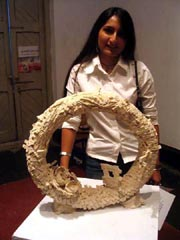
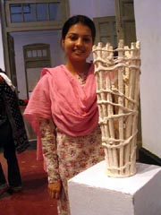
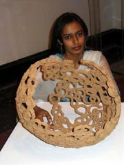
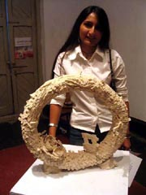
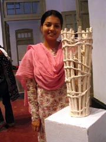
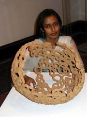
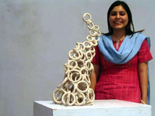
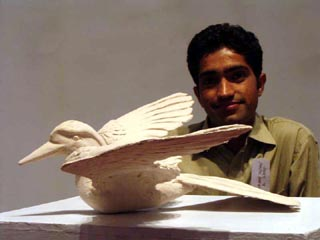
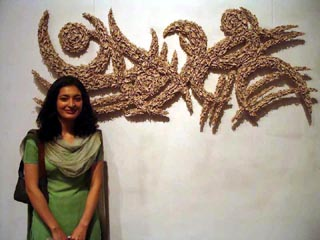
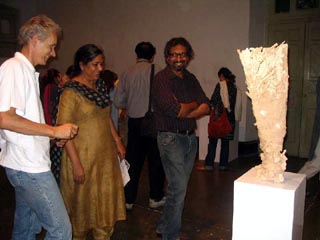

| Paperclay Practice
in Pakistan
Australian ceramist Graham Hay at the National
College of Arts, Lahore

 Head
of the Ceramic Design Department at the National College of Arts
in Pakistan, Shazia Mirza, invited paperclay pioneer
Graham Hay to spend a month working with her staff and
students at their Lahore campus. Head
of the Ceramic Design Department at the National College of Arts
in Pakistan, Shazia Mirza, invited paperclay pioneer
Graham Hay to spend a month working with her staff and
students at their Lahore campus.
Shazia Mirza described what happened: “When I first came
across Mr. Hay's work in Anne Lightwood's very valuable book "Working
with Paper Clay and Additives", I immediately decided to get
in touch with him. I searched for his name on Internet, found his
website, which is a world in its own, and asked for his availability.
His response was prompt and here we are sharing very different experiences
from across the continents.
The Artist-in-Residence program is an interactive learning experience
for both the students at the college and the artist in residence.
We get to see the "living product of a different environment"
operate in our own system. The larger host group is effected in
a very positive manner, through their shared experiences and projects
they exchange ideas and collaborate events, conferences and research
which results in new creative work, and in this case we were introduced
to unbounded imagination with visions refreshed.
  
It was amazing to know through his slideshows that one of his famous
works that actually made me invite him, got broken many times before
it was finally photographed, was mended back to perfection every
time, and was never fired, but recycled instead!
So this material makes you feel so comfortable with your work.
Fear about losing your work seems irrelevant, less emotional attachment
to work helps you develop at an accelerated pace. For all of us
it has been an endeavour, a learning experience and a new opening
of possibilities in the clay world.”

Graham
Hay described how it was for him: "It is always a stimulating
experience accepting an invitation to place myself within a different
environment, language and culture, with different people, clays
and kilns. New ideas, perspectives, directions and friendships,
are just some of the outcomes.
It is a stimulating experience introducing a new art medium, which
does not have an established cannon of aesthetics or techniques,
to a group of bright students and staff. The experiences and work
challenges students, teachers, curators, and audiences. The fun
for audiences is trying to understand 'what happened' and to guess
where it will eventually lead.
Paperclay, in case you haven't heard already, is processed cellulosed
fibre (generally beaten paper pulp) added to any clay. In some regions
of Australia between a third and a half of clay bought by teachers
is paperclay. Similar patterns are appearing around the world. And
for good reasons too: mechanicaly recycling clay either by hand
or pug mill is no longer necessary (just drop firm or dry paperclay
into water to soften). Small air bubbles in the clay body can be
ignored (the fibre acts as vents), repairs/alterations to dry work
can be made and final works don't always need to be fired. Works
can be left to dry, and resumed weeks later after soaking in water.
One
of the directions taken up with enthusiasm by staff and students
at the National College of Arts, Lahore, has been to explore the
unfired paperclay option. That is, make objects from paperclay,
dip or coat various materials with paperclay, and not fire the work.
In a sense art is not just imitating life, it has become a thin
surface skin on nature. Aside from the technical interest, this
metaphor for our species living off animals and plants on the thin
crust of this planet, is but one of many interpretation which may
be drawn from this work."
The Paperclay Practice, an exhibition of work created by
Graham Hay, NCA staff and students was held at the Zahoor ul Akhlaq
Art Gallery, Lahore, 8 to 22 April 2006. For more details visit
www.grahamhay.com.au
and www.nca.edu.pk.
More Articles
|


{kind=link}
{kind=link}
{kind=link}
{kind=link}
{kind=link}
{kind=link}
{kind=link}